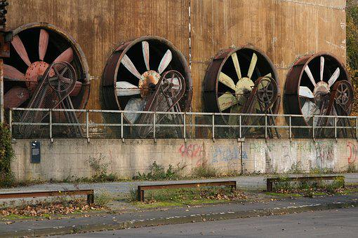

Facility Engineering in Germany as well as in different nations manages the administration of manufacturing plants. The most part is concerned about the planning of the layout process alongside the utility framework inside the space. It also incorporates power sources, water, lighting, environment control. The facility engineers are also expected to keep a beware of a few continuous works. Active engagement in the planning and development of plant frameworks is required. Their working system includes how to maintain the schedule specifications for every operating system inside.
Size and difficulties of plant tells the quantity of specialists to be utilized in giving huge extension to every one of the engineers to deal with the general activities, guaranteeing ideal working effectiveness, everything being equal. Facility Engineering in Germany brings great things to offer. Arranging, Planning, building, working public uses and garbage removal plants are the different elements to give some examples. Deciding to concentrate on Facility Engineering in Germany can be a positive element due to quality education given by the skilled staff. Most recent advancements are utilized for showing students including every one of the hi-tech methods of communication. They guarantee the best help giving uncertainty clearing meetings, improving and expanding the student’s perspective. A few business sectors related strategies are additionally educated in these universities.
This course is additionally presented by the University of Applied Sciences in Munster, University of Applied Sciences in Wolfenbuttel, University of Applied Sciences in Bremerhaven, and so on German Universities have figured out how to pack a position among the best 10 universities on the planet. The changing trend in light of a legitimate concern for students needs the presentation of these kinds of courses. Both bachelor level and Master level degree courses are proposed to the individuals who study Facility Engineering in Germany. These courses give tremendous scope when it calls for looking for job appreciable salary. Experience plays a critical role in raising income. The longer the person stays on a particular work or job, the higher the income, in general, will be.